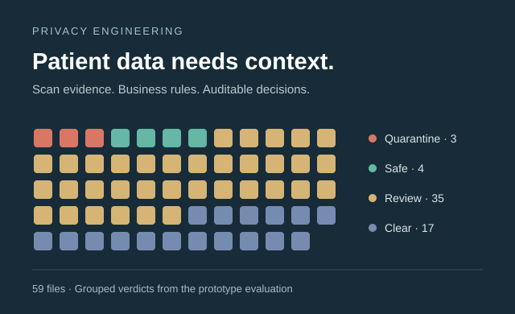

Recommending the next grocery basket
Built a LightGBM recommender using 3.4 million grocery orders, then measured the tradeoff between predicting repeat purchases and introducing new products.
Built a patient-data privacy prototype combining AWS content scans, business rules and an advisory ML scorer in Databricks. View project ↗
Prescriber segmentation, field targeting and adoption measurement in hematology. Automated a weekly competitive readout from two days to under an hour. View project ↗
Commercial analytics and sales-driver modeling across 13 products and five therapeutic areas. Rebuilt reporting with Python, Snowflake and Power BI. View project ↗
Earlier: Business Operations Associate Intern at ZS · Feb – Jul 2022
Built a LightGBM recommender using 3.4 million grocery orders, then measured the tradeoff between predicting repeat purchases and introducing new products.

Built a privacy guardrail that interprets scan findings using patient and provider context, routes uncertain files for review and records the reason behind each decision. Python, PySpark and Databricks.

Segmented 3,500 prescribers by treatment behavior to guide a first-line adoption program. Measured 33% conversion against a 24% historical baseline.

Built monthly sales diagnostics for a specialty-care brand. Used driver waterfalls and fitted response curves to explain changes and explore business scenarios.
MS Information Studies · Data Science and Advanced Analytics
BE Industrial Engineering and Management · Dean’s Merit List
I’m looking for data science and analytics roles starting after May 2027.
abheeanshul@gmail.com